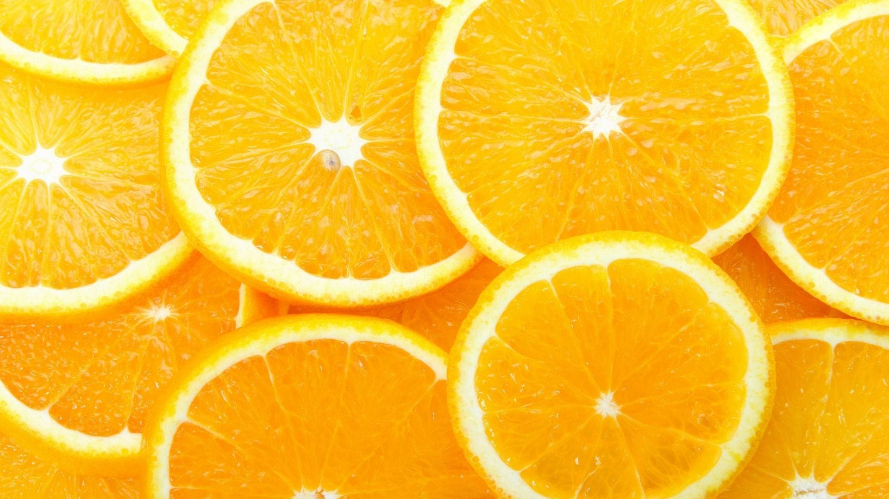
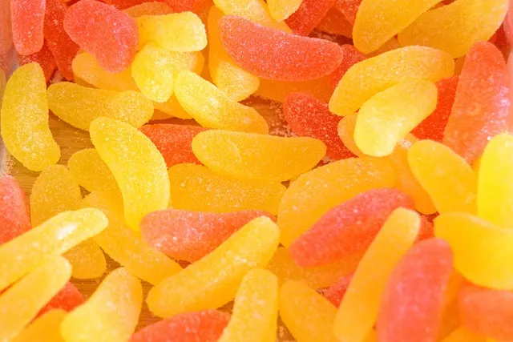
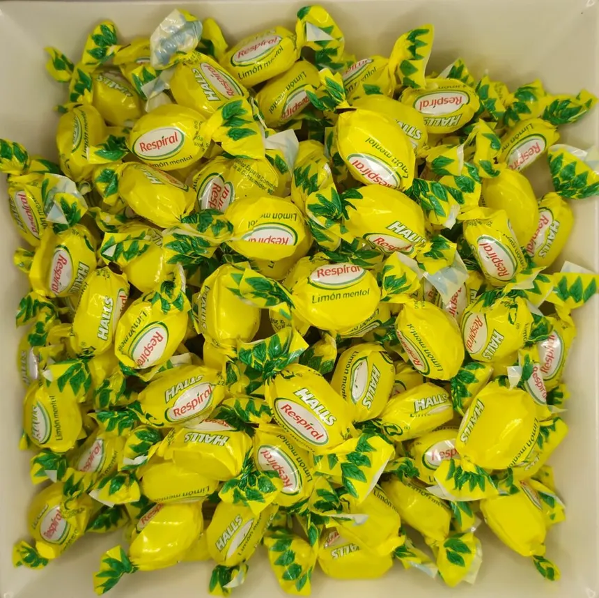
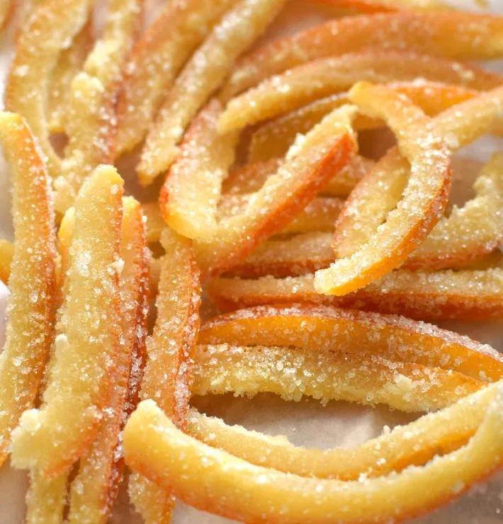
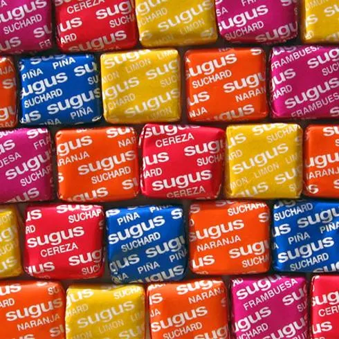
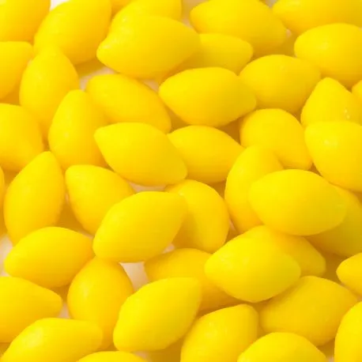

NARANJA - CÍTRICOS
CÍTRICOS
UN SABOR ENERGÉTICO Y REFRESCANTE QUE APORTA UN TOQUE ÁCIDO INCONFUNDIBLE.

DESCRIPCIÓN
Las chuches de cítricos destacan por su combinación perfecta entre dulzor y un toque ácido que despierta
todos los sentidos. Su aroma fresco recuerda a naranjas recién exprimidas, aportando una explosión de
vitalidad en cada mordisco. Estas golosinas suelen encontrarse en formas de rodajas, caramelos duros,
ositos y gominolas espolvoreadas en azúcar ácido. Su sabor es perfecto para quienes buscan una
experiencia
más refrescante y menos empalagosa.
CURIOSIDADES SOBRE LOS CÍTRICOS
- Las chuches cítricas suelen incluir aromas de naranja, mandarina y limón.
- El sabor cítrico realza la sensación de frescura en el paladar.
- Son uno de los sabores preferidos para mezclas ácidas.
- El naranja se asocia con energía, juventud y dinamismo.
PERFIL DE SABOR DETALLADO
| ATRIBUTO |
VALOR |
DESCRIPCIÓN |
| Dulzor |
⭐⭐ |
Equilibrado para no opacar el toque cítrico. |
| Acidez |
⭐⭐⭐⭐⭐ |
La característica más distintiva de este sabor. |
| Aroma |
⭐⭐⭐⭐ |
Intenso, refrescante y fácilmente reconocible. |
| Frescura |
⭐⭐⭐⭐⭐ |
Un toque cítrico, frutal y vibrante en cada bocado. |
TIPOS DE CHUCHES CÍTRICAS
- Gajos espolvoreados: clásicas gominolas con azúcar ácido.
- Caramelos de limón: siempre presentes en casa de la abula, alivian
ligeramente la tos.
- Cortezas escarchada: cortezas cubiertas con una capa crujiente de azúcar
cristalizado.
- Sugus: Clásicos dulces blandos, generalmete cítricos (¿Porqué era azul el de
piña?).
- Caramelos de limón: dulces tradicionales, duros por fuera y rellenos de
azucar ácido por dentro.





COMBINACIONES RECOMENDADAS
- Gominolas cítricas + chuches de cola: mezcla refrescante y clásica.
- Naranja + limón: combinación ultraácida para valientes.
- Rodajas cítricas + chocolate negro: contraste sofisticado.
- Caramelos de naranja + regaliz negro: sabor retro muy particular.
- Gominolas cítricas + fresas: mezcla dulce-ácida equilibrada.
← Volver al índice